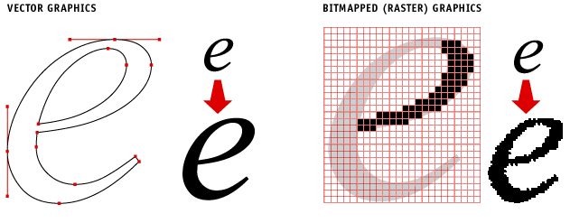

When writing a document, there are many stylistic choices that are
relatively arbitrary. I collect the arbitrary choices that I've made
in the course of my writing here both for my own reference and for my
students. Many of these
are LaTeX-specific.
You'll likely disagree with much of what I say here. In fact, I disagree
with some of it; sometimes the choices here reflect compromises done to minimize
friction with co-authors or choices made to minimize paper length (e.g.,
removing ISBNs from references). Please do not point out places in papers where
I've deviated from these. Sometimes I have good reasons for deviating: my style
is evolving, my co-authors wouldn't accept my conventions, or the journal
stipulated something different. I also realize that, as with every document on
writing, there will be typos and mistakes here.
Be sure to check out Neil
Spring's useful
resources (including a script you can use with flymake when
editing LaTeX documents). I disagree with the following rules:
I use the British convention for quote marks (which makes more
sense to computer scientists, as below).
"sufficient" is a fine word (esp. for "sufficient statistics")
"Teh" is almost never a
mispelling when I write it
The rest is great, however, and you should use it (with the above edits).
For my students, this is included as part of the Makefile for generating papers.
Look at the end of compilation to see the red flags that it has discovered.
The Economist
style guide is a good resource for exposing bad habits, and their
conventions are reasonable. However, they are a British publication, so ignore
British-specific rules (I do have some other points of disagreement, such as
infinitives).
Sometimes I get asked by a new collaborator why I use LaTeX. The
bad reason is that it's a convention. It's quite obvious when a paper
is not written in LaTeX, and in many scientific fields, it's a sign
that you're not really part of the community: papers not written in
LaTeX are greeted with more skepticism than papers that are (and often
with good reason, non-LaTeX papers usually are worse than LaTeX ones
in my reviewing experience; not a rule, but a useful heuristic).
But these are social reasons to use LaTeX, and are not particularly
convincing for pragmatic reasons. So here are some pragmatic reasons
to use LaTeX instead of Word.
Equations and Math: LaTeX was designed to give clear and
effective renderings of math. Word does a poor job of both making
math look good and allowing you to edit the math later. You can
make equations look good, but it's hard to edit. Word also makes it
very difficult to have inline math, as it often screws up the
spacing between the lines.
The density $\rho$ gives us the resistance $R=\rho L$ of the
material.
Templates: Most venues provide LaTeX templates as their
standard templates. These are much easier to use than Word
templates, which require far more fiddling.
You Do Less: In Word, you are tempted to move images and
figures around to determine the placement. This is because word
gives you that flexibility, and it's hard to ignore the siren call
of tweaking. In LaTeX, you provide suggestions on placement and it
does the best it can based on pre-programmed rules (e.g., you tell
it that it should be at the top or bottom of a page).
References: One of my biggest annoyances when I am
forced to work in Word is how hard it is to easily refer to
different chapters, citations, or figures in a way that will be
automatically generated. I know there are ways to do it, but it
often has huge issues and requires obnoxious plugins. In most cases
it is either done manually or requires substantial post-correction.
LaTeX does all of these automatically, and it just works.
Macros: More generally, skilled LaTeX writers develop a
set of macros that vastly improves productivity and consistency.
These range from typsetting conventions references (e.g., to the
name of your approach, institutions, etc.). Because LaTeX makes it
easy to import files, you can share references across many documents
that you're working on at the same time.
Collaboration: Because LaTeX is just text files and it
is easy to include on file in another, you can use tools like git to
work with others as you create your paper.
Cost: Unlike Word, it's free and open source. LaTeX
hasn't changed much in 20 years, so you can still read and compile
papers without anything being messed up. Word changes every five
minutes.
Accessibility: When I communicate with blind
researchers, they always ask if I have a LaTeX version. They can
write and read LaTeX much more easily than Word or PDF (especially
when there's math; screen readers always screw up embedded equations
in Word).
This includes related work (even super old stuff like Aristotle)
This includes generative processes
It's okay to use the future tense for future work
Punctuation
Don't put footnotes on a number (it looks like an exponent).
Put footnotes immediately after sentence / clause
punctuation. Do not put footnotes before final punctuation (common
mistake).
I'm never ever sick at sea.\footnote{Well, hardly ever.}
Do not use a comma between two verb phrases (no subject) joined by a conjunction.
I washed the car and mowed the lawn.
Do use a comma between two independent clauses (subject and verb) joined by a conjunction.
I washed the car, and I mowed the lawn.
Use an Oxford comma to set off the penultimate element in a list.
I had eggs, toast, and orange juice
Use LaTeX hyphens (-), en dashes (--), and em dashes (---) correctly
This is a low-budget trip, and pages 78--101 describe the
journey. If the train is on time---which it never is---we'll
get there tomorrow.
Put punctuation outside quotes (British / Canadian style, not American).
Also make sure that your quotes go in the right direction; don't draft in MS
Word and copy paste into a TeX document. If you do, your quotes will be
wrong (TeX uses different symbols for left and right quotes).
In civilized cultures, this is called a ``coaster''.
Similarly, I use M-x q to word wrap paragraphs in emacs. Like two
spaces after a sentence, it looks better in editing but has no impact on
layout (more practically, it helps you estimate text length while editing).
Figures
If a figure has a caption, use the top or bottom
positioning. Center the actual image, and be sure to provide a
label.
\begin{figure}[tb]
\begin{center}
\includegraphics[width=0.9\linewidth]{2015_hoverboard/awesome}
\end{center}
\caption{Jetpacks are next.}
\label{fig:hoverboards}
\end{figure}
If the figure has no caption, you can use "here".
Make sure the caption stands on its own. When a reviewer
first sees a paper, they will often just skim the figures. Make
sure that if a reader does this they will get a sense of what
the paper is about and the clear takeaway from each figure.
Try to use full sentences in the caption.
Use raster / vector formats as appropriate. In general, photos
should be wavlet formats (jpg), hand-drawn cartoons, logos, or images with
alpha channels should be low-pallete rasters (png), and everything else
should be a vector format (pdf/eps). This is another way that LaTeX is
far superior to Word, where it's much harder to inser graphics without
vector formats being lost. (Omnigraffle and ggplot2 by default create
vector pdfs; another reason to use them!)

Don't supply file extensions; pdflatex/latex will choose
for you (makes it easy to switch between the two).
When you refer to a figure, don't use "see". Just put the reference.
The FancyPants algorithm can find fancy pants (Figure~\ref{fig:pants}).
Use ggplot2 for graphics, and make
sure notation
is consistent with LaTeX. Store your data in the same repository as
your paper and have a Makefile command to regenerate figures from the
original data.
Math
When in text, spell out all natural numbers less than or equal to one
hundred. Also spell out "infinity" unless it's in an equation or an
algorithm. Anything else should be represented in decimal unless prefixed
by the base (e.g., "0b00010"). In general, follow the Chicago style for
numbers.
Spell out big round numbers like thousand, billion, etc.
Never start a sentence with a number represented with numerals.
It's okay to break these rules to ensure consistency in the same
sentence or paragraph. E.g., "The final score was 315 to 10".
It's okay to use numerals for Likert scales: "5-point scale".
Punctuate every equation as prose, treating it as a noun
Vector/matrix convention (stolen from Yoav Goldberg): Use bold upper
case letters to represent matrices and bold lower-case letters to
represent vectors. Use subscripts to represent entries from those
vectors and superscripts to identify different flavors (e.g., different times
or layers). In the rare case that you exponentiate vectors or matrices,
put them in parentheses first. Use a semicolon to denote vector
concatenation.
References within a document
Prefix the label of a reference with the type of reference it is (use
the first three letters of the type of thing it is: fig, tab, sec, etc.).
\section{Introduction}
\label{sec:intro}
Keep references short and do not include spaces in the label (use
hyphens if you must have more than one word, but this should be a
rarity)
\label{sec:romulan-treaty}
When using an inline reference, make sure there's a tilde
between the noun and the number. This makes sure that this
doesn't get split between lines (non-breaking space).
As we show in Section~\ref{sec:intro}, long cat is long.
Stupid rules you should follow
Even though they're not really true, people get twitchy when you abuse them.
So learn them as rules for professional writing (even though they're
hogwash).
Use "fewer" when comparing discrete amounts, and use "less" when
comparing continuous amounts.
To weigh less, he should eat fewer donuts.
Use "that" for restrictive clauses (no commas). Use "which" for non-restrictive
clauses (use commas).
The pizza, which everyone loves, is from Conte's. The pizza that fell
on the floor is no longer edible, however.
Use "who" only with the nominative case (and
"whom" in other cases).
who can use this (subject of "can use")
for whom we designed this (object of preposition)
who gave a lecture (subject of verb "gave")
Caltech tenured whom? (object of verb "tenured")
Only use "data" as a plural noun (with one exception).
Likewise, only use "media" as a plural noun.
Trickier is "criteria" (plural) and "criterion" (singular):
"Some good criteria are ..." vs. "A good criterion is ... ".
Avoid sounding pompus but still be technically correct (the best
kind of correct) by using "criteria" as a plural noun.
Anti-rules
Some people don't think you should do the following, but I disagree. Feel
free to completely ignore these non-rules.
It's fine to end your sentence with a preposition if it sounds natural.
It's fine to boldly split an infinitive.
It's fine (and often better) to use "they" as a singular gender-neutral pronoun.
Citations
Below, I suggest removing valuable metadata. This is for two
reasons: space and uniformity. Unfortunately, the bibliography
often counts against page length, so we need to keep our
bibligraphies as short as possible while keeping them useful.
Because we often have to strip bibtex entries, it helps to
have everything be compact to preserve uniformity and having
to do last minute massaging. Just make everything obey these rules
when you put it into your bibtex for the first time.
Use bibtex and use it correctly
Do not abbreviate names (i.e., use "Thomas Stearns Elliot", not
"T. S. Elliot") in your files. Bibtex will will do this for you, and you
will be out of luck if your citation file uses full names (like ACL).
Make sure that you are using the correct citation type for
articles, books, chapters, etc.
Put proper nouns (e.g., "Dirichlet", "Bernoulli", and "Pitman-Yor"
are all named after people), in your bibtex file in brackets to make sure
they get capitalized correctly
title = {Latent {D}irichlet Allocation},
Define journal and conference names in a different bib file from the
one you store your references in. This way you can swap out long form title
(Proceedings of the Association for Computational Linguistics) with the
short form title (ACL) if you're tight for space. Plus, it makes sure your
citations are consistent.
@String{cl="Computational Linguistics"}
@String{chi="International Conference on Human Factors in Computing Systems"}
@String{cvpr="Computer Vision and Pattern Recognition"}
@String{coling="Proceedings of International Conference on Computational Linguistics"}
@String{colt="Proceedings of Conference on Learning Theory"}
@String{conll="Conference on Computational Natural Language Learning"}
@String{eacl="Proceedings of the European Chapter of the Association for Computational Linguistics"}
@String{ecml="Proceedings of European Conference of Machine Learning"}
@String{emnlp="Proceedings of Emperical Methods in Natural Language Processing"}
Put citations inside the relevant sentence but outside quotes.
The rug really ``tied the room together''~\cite{dude-98}.
Do not include page numbers, publishers, or locations for
conferences (nobody reads the paper versions anyway).
Do not include volumes for NIPS. People just use the year.
Do not include DOIs or ISBNs
For numeric citation styles (e.g., NIPS), don't use inline citations as nouns; use the name.
Moseby~\cite{moseby-11} shows that he can pull off red boots.
For natbib-like citations (e.g. ACL), use citet/newcite to accomplish
this. Don't use a non-breaking space in this case.
\citet{moseby-11} shows that that he can pull off red boots.
Don't include material that's only title, author, and year.
That's not enough information to find it. Make sure you include
either a web address (ArXiV), a university (theses), or a venue (most things).
When introducing a paper with, for example, an acronym you'll use
throughout the paper, put the acronym in the citation brackets.
We compare word-level represenations~\cite[Word2Vec]{mikolov-13}
against document-level representations~\cite[\abr{lda}]{blei-03}.
Typography
Put mentions of words in quotes and topics (e.g., from a
topic model) in underline (topic macro).
We wanted to understand why the \underline{research} topic has
high probability for ``procrastination'', but we leave that for
future work.
Use small caps for acronyms (it looks better; I create a macro called
"abr" to make this easier), and don't put periods after the letters in
acronyms (the reason why: LaTeX uses smart spacing after periods, but
doesn't handle sentence-final acronyms; this will make your life easier).
\textsc{tla}s are popular in the \textsc{us} government.
If you have an abbreviation mid-sentence, make sure LaTeX knows not to
use sentence final spacing.
Crosby et al.\ have a very, very, very fine house.
Because I learned to type on monotype fonts, I will put two spaces
after a period that ends a sentence. There's no good reason to do this, but
LaTeX knows to do the right thing in typesetting. I continue to do it,
though, because I think it looks better when editing in emacs with fixed-width
fonts. (You don't have to do it, but if you see me doing it, that's why; you
don't have to worry about it / correct it.)
Put features (for supervised learning) in monospaced fonts
(feat macro).
We the number of words in a document (e.g., \texttt{doclen:13})
is the final feature.
If it's allowed (ICML 2013 didn't, for instance), use the
"times" package for serif fonts.
For ordinals, write them out if they're less than or equal to one
hundred. For ordinals greater than one hundred, use a text superscript.
The Second Reich loved its 247\textsuperscript{th} pointy helmet design.
Write ligatures, umlauts, and other diacritics correctly.
If you want to know what a f\^ete galante looks like to a physicist, look up Schr\"odinger in the Encyclop\ae dia
If you have a long list of names (e.g., journal title page), use
non-breaking spaces between name components.
Put a non-breaking space between references, citations, and math symbols. Do not put a space before the non-breaking space; this defeats the purpose. Your word should end, be followed by a non-breaking space, followed by the reference, citation, or symbol. This prevents a line breaking between references and the thing they're connected to.
Figure~\ref{fig:pony} shows a pony with a mass~$m$ calculated by Euler's method~\cite{horse-mass}.
Never use the word "performance". It's likely a stand-in for
something else (e.g., "accuracy", "latency", or "F1"). Say what
you actually mean.
Avoid "perform an X". X is likely a noun form of a
verb. Just use that verb. Don't "perform a split" or "perform a
cross-validation" or "perform a song". Just "split",
"cross-validate", or "sing".
Use "first" rather than "firstly" (same for second, third, etc.).
Use "unlike" rather than "different from".
Never use "utilize"; always use "use". Corollary: prefer "usage" over
"utilization", unless it's a technical term. Same thing with "leverage" (unless there's
mechanical advantage involved).
You can always delete "this means".
You can always delete "it turns out that".
You can always replace "in order to" with "to".
You can always delete "we find that".
You can always delete "our findings/results suggest that" (and variants)
You can always replace "to do this we" with "we".
Use "while" rather than "whereas".
Don't say "it is well known"; either cite or just state the fact.
Prefer "toward" over "towards".
You can almost always delete "notice that" or "note that". (My dumb fingers are
often very guilty of writing this.)
Use "we" rather than "this paper" or "this work".
Use "shown" over "denoted" or "listed".
Use "in addition" rather than "besides".
Use "certainty" rather than "certitude".
Unless you're talking about physically knocking someone to the ground,
don't use the verb "tackle".
Try not to use "hedging" language (often, probably, etc.). Either
something is true or it isn't. If it really is a mixed bag, quantify the
amount (e.g., three out of four dentists).
Avoid the phrase "it has been shown"; if you have nothing more specific
to say about it (e.g., who showed it), then just remove it. It's an
agentless appeal to authority.
If British and American English use different words, you
should typically prefer the American ("elevator", "stroller",
"diaper", "truck"). The exception is when this could lead to
confusion when one language's term is ambiguous. In those cases,
use the version that removes ambiguity. As a consequence, use the
British terms "trousers" (not "pants"), "crisps" (not "chips"),
and "cashpoint" (not "ATM"), but use the American terms "pacifier"
(not "dummy"), "gasoline" (not "petrol"), "fries" (not "chips"),
and "cookie" (not "biscuit"). Most of these examples will not be
relevant in academic writing, but "factoid" is one notable
example. British speakers view it as something that
is untrue. Try to avoid it if possible. (I learned about this too late from KMH).
I will default to American spelling. If you send me a
nearly-complete draft using consistent British spelling, I will
gladly keep that convention (being an Economist reader finally
pays off). If you use Indian or Canadian spelling, experience has
shown that I will turn it into American spelling as I edit (sorry,
I just can't keep the intermediate cases straight).
In academic writing, avoid contractions.
Paragraphs
Make sure your paragraphs have topic
sentences. Until you have mastered writing paragraphs, you
shouldn't break this practice.
Writing a paper Collaboratively
Often, when computer scientists work together on a paper, they will
discuss something using the concept of a "write token". This concept comes
from a token-ring
computer network. The problem is that the computers share the same wires to
send messages over the network. If two computers try to send something at
the same time, it will cause a problem. The same problem comes up when
writing a document; if two people try to edit the document at the same time,
it can cause problems.
Thus, before editing a file shared in some collaborative environment
(Dropbox, SVN, etc.), send an e-mail (or some other pre-arranged
notification) to your coauthors. Something along the lines of "I'm claiming
the write tokens for foo.tex". Then, edit the file to your heart's content,
save and commit your changes, and then send an e-mail saying "I release the
write tokens for foo.tex". Bottom lines: only modify files for which you
have the write token, and release tokens for any file that you're not
actively editing.
As a consequence, it helps to "input" many smaller files to create
the whole
document. This enables co-authors to claim tokens to specific sections
on a file-by-file basis. (SVN, CVS, and git allow you to merge files after
agreeing to the same delineation of write tokens, but this is dangerous; I
discourage it.)
Make sure that your text editor notifies you when the underlying file
changes. If this doesn't happen, then you might unintentionally clobber
(overwrite) another's edits. This happens as follows:
you edit a file (with your write tokens)
you save the file, commit, and release the write tokens
you leave the file open in your editor
Collaborator Charlie modifies the files
you update the file on your disk (but leave the file open in your editor)
you then make some changes to the file (after getting the write tokens)
and then you save those files, but because your editor never reflected the underlying changes, everything that Charlie did is forgotten
you commit the changes, and your version control software thinks
that you knew that you were overwriting all of Charlie's changes
(because it gave you the new file), and everyone else will also miss out
on Charlie's changes
Emacs does notify you when this happens: either use
emacs or a text editor that does this.
When the deadline gets really close, I like to print out a
copy of the paper, mark the changes with a pen, and then quickly
grab all the tokens for a paper to implement those changes. (If
rewrites or large text additions are required, I do those in a
scratch file.) I can then very quickly implement my changes while
holding the tokens for a short period of time. If time is really
short and there are lots of papers going in for a deadline, I may
hand you (physically or virtually) the marked up version to
implement the changes. This is meant to save time. If anything
is unclear, please ask me.
If you're actively editing a file, you should only
put in the files needed to generate the output. Do not store
the intermediate or final output (pdf, log, aux, etc.). This is not
just to save space (every little change, no matter how small, will
force a multi-megabyte file to be saved) but also because it can get
in the way of other people as they're compiling the document.
I also prefer using pdf (vector) and png (raster) files for graphics
(as appropriate); this is because the output of pdflatex is usually
better/easier than that of latex.
Organize the files as follows:
Keep all style files (e.g. things that could be shared between submissions) in the "style" folder
Keep all bibliography files (e.g., bibtex source) in the "bib" folder
Have the main body in a file called
"YYYY_venue_project.tex" and the associated data (sections,
graphics, etc.) in a folder called "YYYY_venue_project"
This allows the Makefile to work well and reduces clutter
What about ShareLaTeX or Overleaf? They are not mature enough, they
don't work offline, and I cannot use command line tools (latexdiff, grep,
etc.), so I'd rather just work with svn or git.
Error Analysis
When writing a paper with an objective measure of success or
failure, it is important to include an error analysis. This is
helpful for multiple reasons: it shows that you've actually looked at
your data, that you understand what your algorithm is doing, and you
know how your method is better (or at least different) from other
algorithms.
For example, let's say that you're doing a paper on word
segmentation and you're comparing to
the Zigglebottom
segmenter. One thing you can do is sort all of your sentences by
the following metric: #words you got right - #words Zigglebottom got
right. You should look at both extremes. Are there patterns in the
things you get right and they get wrong? If so, that likely reveals
something about what your algorithm is doing.
Otherwise, if you're writing a paper on a well-known task / method,
you risk a reviewer reading it and saying, okay, I might do slightly
better, but why? Are there pitfalls I should be aware of? It also
makes sure you understand what you're claiming better, which allows
you to write a better paper overall.
For some conferences and most journals, you will have the opportunity to
respond the the reviews you've received. This often doesn't matter. Many times
the reviewers all loved or hated your paper. You don't have much of a chance to
change their minds. When your paper gets marginally positive reviews, a good
response can really help.
First, be as brief and civil as possible. If you don't have much
to say, don't try to fill the space. Only use as much of the allotted
space as you actually need. If there are no statements of facts you
can offer to help clarify a reviewer's opinion, then just let it go.
Make sure to thank the reviewers and to be gracious. They may be
idiot numbskulls who trashed your paper, but they did so as a
volunteer. If they didn't understand something, it's usually your
fault for not writing it well in the first place.
Second, make your response as self-contained as possible. The PC
will read your response by itself. They should be able to get the
gist of the reviewer's opinions through your response and
understand your reply without looking anywhere else. Obviously you
cannot include all necessary details, but make sure your response
stands on its own as a single, coherent document.
Reviewer Three questions whether the Pope is Catholic. We follow
the convention of Capitan Obvious (2003), which has been the
foundation of many subsequent papers.
Don't get this wrong by writing your response as an inline e-mail.
It's an inefficient use of space and you can better frame the issues
than the reviewers. (It may be helpful to compose the response next to
the reviews, but don't assume that the reader will have access to that
information.)
Even if you don't get a response, once you get a set of reviews, create a
spreadsheet (shared with co-authors on Google Docs) to address the issues that
the reviewers found with the following columns:
Reviewer ID: Even if you know who it is (e.g., from a paper
clinic, it's probably better to turn these into numbers).
Issue: If it's a typo, note the typo. If it's something bigger,
like a characterization issue, copy-paste or paraphrase.
Notes: Write down anything that might be relevant to jog your
memory if you come back to it later (e.g., related work, a paper that does
this well, etc.).
Difficulty: On a scale of 0 (fix a typo) to 10 (rewrite all the
things!), how hard do you anticipate the fix being? This will become quite
important in a few moments, so be honest!
Fix: How can you fix the issue? A very important note here: "I'm
not going to fix it" is a perfectly legitimate response!
Who: For multi-author papers, keep have the first author assign
responsibility to each of the authors.
Done: Has this been addressed? For non-trivial stuff, explain how
the problem was solved.
Other than organizational fixes (which should be done first), it's often
easier to go in increasing order of difficulty. Lots of little fixes can
sometimes fix bigger issues as you work your way through. This spreadsheet will
also help to write a response document (more important for journals than conferences).
Checklist before submitting something
Look over your citations. Do they look uniform? Sometimes when you
copy/paste a bibtex citation, junk comes with.
Read over your section titles. Do they tell a story? Don't just use
"introduction", "background", "model", "inference", "conclusion", etc.
While your sections may map to those, call them something more specific.
Do your figures stand on their own? Make sure a bored reader /
reviewer can get the gist of what's going on through the figures alone. So if your first figure is about the data you use, make sure that motivates the method you'll use. If you have a figure of the graphical model, don't just say "our graphical model"; instead, point out the salient aspects of the model that makes it interesting to a reader under time pressure. If you have a figure of results, don't just say "summary of results"; instead, point out what the results mean in the caption. You'll say something similar in the text, so don't repeat yourself. Likely there are different interesting trends you can point out.
Is your abstract persuasive and interesting? When an area chair reads it, will they send it to the reviewers that you want?
Do a spellcheck!
Make sure you've spelled your co-authors' names correctly (not always
obvious; perhaps they use middle initials or a different name / spelling for
publishing) and you have the correct affiliation (did they move since you
first wrote the paper)?
Camera Ready
First, congrats! It's great that your paper has been accepted. Your
work isn't done yet. Do not ignore these steps. They are very
important for you to take ownership of the paper, make sure that your
reputation will be safe, and to keep your advisor and funders
happy.
Immediately (within one week), do the following:
Have your
advisor give notes on the current draft of the paper
Add acknowledgements
to anyone who helped you at any point while working on the paper. Read an early
draft, provided data, provided help, had interesting discussions with, etc.
Add an appropriate acknowledgement to the grant funding you (use previous
papers as an example). For my students, find your project on my projects page, ask about anything you're unsure of.
Turn the reviews into todo lists and order everything starting with easy /
obvious things and going down the list to impossible / difficult / things you
disagree with (call the items generated from the first two items TODO)
Make a list of relevant papers that have come out since you submitted
(call this list CITE)
Move the paper to a public publications repo to make it easier for people
to read drafts and make suggestions.
Within two weeks, meet with your advisor to select:
What things out of TODO are trivial
See if they have other things to add to the list
What citations to add from your CITE list
Within three weeks, create a version of the document that:
Addresses all of the trivial issues from the TODO list and CITE
list
Has everything spell-checked and typos corrected
Has everyone's name is added to author list and spelled correctly
(if there's any doubt, ask)
Uses the right style file (it sometimes changes between
submission and camera ready)
Cite any recent work that's relevant and has come out (or you
learned about) since you submitted Has no widows or orphans
In the rest of the time left:
Send the document to other folks to read over (you must do this
if there are any coauthors not deeply involved in the writing process)
Carefully incorporate their suggestions, but don't ever let the
document leave a camera ready state
Work on any of the more difficult TODOs
Once you submit the document:
Put it on your webpage and send the final PDFs to the authors
Use Beamer and OmniGraffle (but keep your Beamer slides
uncluttered with navigation and sections).
Don't use a laser pointer (integrate any emphasis into your slides). People have a tendency to over-use laser pointers, and they are not always usable (because of the screen, multiple screens, etc.).
Don't read from notes (and don't use your slides as notes). If you feel uncomfortable delivering the talk, it means you need to practice more.
If you can ever use a picture instead of an equation, choose the picture (even if it takes more time).
Posters
Use Beamer
Use blocks with informative titles (just like section headings)
Do not put two images / tables in a block unless they are
showing very related information (e.g., don't put results from two
different datasets in the same block).